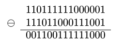
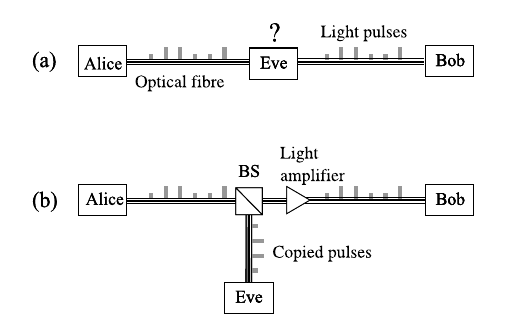
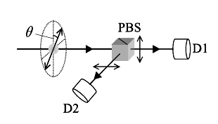
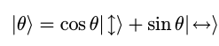
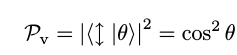
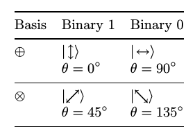
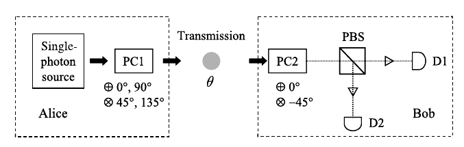
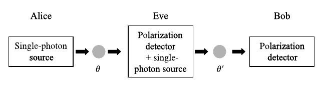
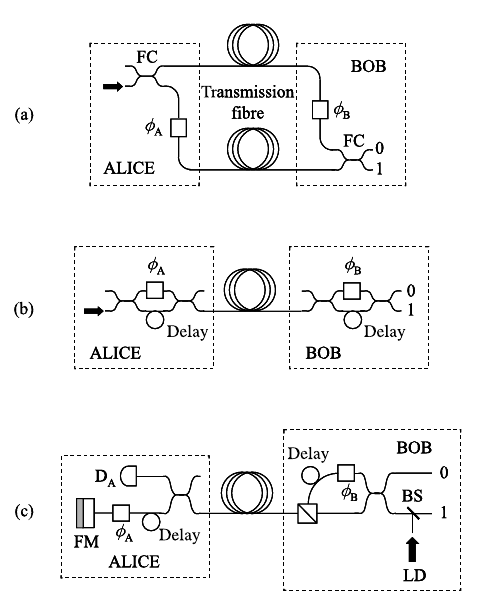

详解量子加密（通俗版）
作者：James Zhu
写这一篇专栏文章主要有两个原因，一是最近中国成功发射了墨子号量子通讯卫星，这是人类首次把量子通讯系统部署在太空，并将进行各种相关的科学实验；二是因为最近在看Mark Fox的教材 《Quantum Optics an introduction》，看到里面有一个专门的章节讲量子加密。正好对量子加密应用很感兴趣，同时也考虑利用实验室现有设备条件实现一个原型，于是比较仔细的通读了一遍，发现收获颇多。本文插图和部分内容直接引用翻译自Mark Fox的教材。
要谈量子加密，首先得说到通讯加密的思路和安全性。
历史上最早的密码之一凯撒密文，仅仅是把单词的每个字母移位若干位。即使在当时，只要猜出这个模式，稍加尝试就能破译。当然，以现代密码学里各种统计分析的工具，破解这种程度的“加密“更是小菜一碟。
理论上最安全的加密手段就是One-time Pad，也就是一次一密。原因很简单，以bit操作为例，通讯内容的每一个bit，都有一个加密mask的bit对应进行指定运算，例如：与AND、或OR、异或XOR等等操作。因为每一次通讯都使用不同的加密密钥，而密钥的每一个bit又是完全随机的，所以只要第三方（窃听方）没有加/解密的密码本，他就完全不可能破译加密信息的内容。

如上图所示，第一行是bit形式的通讯明文，第二行是完全随机的加密密钥，第三行是加密后的报文。没有加密密钥，想从加密报文中获取原始信息是完全不可能的——靠猜的话会错一半，关键是还不知道哪个位置猜错了哪个位置蒙对了，所以等于是一无所知。这就达成了通讯的安全性：只有掌握密码本的收发双方能从加密后的报文还原出有效信息。
实际操作中一次一密不可行，因为要进行大量的通讯，就要事先提供足够充足的加密密钥。密钥还必须安全可靠的运送到接收方手里。也就是通信双方的物理 接触必不可少（直接会面碰头或者由信使传递）。此外，依赖密码本的一次一密也很难确认密码本在制作、传递和使用过程中有没有第三方复制备份。一旦第三方也 有同一密钥，那加密通讯的密文很快就能破译了。更糟糕的是通讯双方很难在造成可观的损失之前察觉密码泄漏。
现实工程应用里的加密方法更是在可行性和安全性之间采取了一个折衷——利用数学里一些函数的特性（比如根据参数容易计算函数值，根据函数值难以逆推参数的特性），采用公钥加密，私钥解密的方式，来保证通讯信息的安全。最有名的当属RSA加密算法。
然而，这些加密的安全性完全取决于一个并不绝对安全的假设：那就是加密函数的反函数很难获得，比如RSA所依赖的计算两个大质数乘积的因式分解。但是谁也不 能保证将来有没有数学家创造出更快的因式分解算法，或者像王小云团队寻找Hash碰撞那样，大幅减小解密难度。又或者从硬件入手（比如量子计算机），用更快的计算速度快速暴力破解。短时期内，这种依赖数学计算时间复杂度的加密手段还是可以使用的，也的确在安全性和可用性之间取得了不错的平衡。但是从长远来 看，被破解被淘汰应该是必然命运。当然，新的加密算法应该也会被研究者源源不断地开发出来。使得加密与破译变成了一场攻防拉锯战，而通讯双方通讯安全隐患 的隐忧始终不能被消除。
量子加密可以说是另辟蹊径，用量子力学中测量对物理状态产生不可逆影响的属性，来确保通讯密钥的安全传递。所以它不仅仅解决了一次一密的密码本传输问题，还能确保在传输密钥时不会被第三方保留备份——下文会解释第三方窃听会造成接收方错误率统计异常。这样收发双方可以立即中断通讯以防信息泄漏，或者换用其他信道以避开监听。
当然原理上用量子加密手段直接通讯也未尝不可，但是受限于通讯带宽限制，比较合理的设计是使用量子加密传输密钥(QKD: Quantum key distribution)。只要通信双方共享了一次一密的密钥，他们就可以安全的在公开信道传输加密后的报文而无需担心安全问题——一次一密，所以不用担心密码破译专家能从加密后的报文拿到任何有效信息：没有密钥，报文只是一堆随机的0和1而已。
第三方要切断通讯当然是可行的，剪断发送端或者接收端所有光纤即可（假设收发者都使用光纤作为通信媒介）。但是，这样做也就强制中断了通信，窃听不到任何有价值的信息。而只要第三方以各种手段，比如冒充接收方接收消息再制造备份发送给接收方，介入了通讯过程， 他就会造成接收方的统计异常，从而无法悄无声息的窃听到密钥。所以量子密钥传输从物理属性上确保了密钥的不可泄漏、泄漏即察觉的高安全性。这一点是任何常规加密手段都做不到了。
最为有名的QKD算法，主要是BB84和B92：
-
the Bennett–Brassard 84 (BB84) protocol,
-
the Bennett 92 (B92) protocol.
下面以BB84为例， 简单介绍一下光纤系统里量子加密密钥的分配过程。
日常传统的光纤通讯过程如下，信息bit的1和0分别由光脉冲的高低或有无来代表，收发端都有同步时钟来获取准确的bit信息：

图（a）是第三方Eve介入的情况，为了能截获密钥且不被发现，她只需要在信道中插入一个分波器，将一部分光脉冲信号收集测量，同时另一部分光脉冲信号增益放大到入射状态。这样窃听者Eve就神不知鬼不觉的截获了Alice与Bob的通讯密钥。这样后继的通信过程，只要Eve能截获加密后的报文，她就能利用密钥破解报文。
不要以为在光纤通讯中窃听密钥很难，现实生活中的确时时刻刻在发生。这里仅列举偷窥狂魔美帝的案例：The Creepy, Long-Standing Practice of Undersea Cable Tapping
简单说来就是美军潜艇装了机械臂在海底窃听光纤通讯。原本是如上图所示，神不知鬼不觉的。哪知有一天阴沟里翻船，不小心把连接中美的商务光纤弄断了，可能造成了大量交易中断，具体造成多大经济损失，还请懂行的知友提供数据。总之就是华尔街很生气，后果很严重。而政府层面上对通讯安全的重视应该多少会有所提高。这也多少会促进文章开头提到的量子通讯卫星相关项目的投入吧。
（题外话：
实际上美军潜艇窃听海底光纤完全不需要上图（b）中的分波器和光放大器这些多余的东东。原因很简单：海底光纤网络分区域都装好了光放大器和光延时器等等设备，而且是相当智能化自动运作的。因为在这么长的通信距离，光脉冲强度的衰减是不可忽略的，每隔几十公里几百公里就需要续命一次，否则接收端什么也收不到！其他设备可以用来恢复时钟频率——即让光脉冲间隔维持稳定，否者接收端收到次序混乱的乱码也没什么卵用。
美军潜艇只需要一只机械臂，将光纤包层剪开，稍微弯曲纤芯，就会有光信号泄漏出来。泄漏出来的光脉冲实时记录下来就是实现实时监听了。而泄漏造成的能量损失，在海底设备的接力过程中就被负反馈系统自动补偿了，真是神不知鬼不觉，直到鬼子用力过猛，不小心把光纤折断了。。。折断了。。。折断了。。。。。)
言归正传，借助于已经铺设好的光纤系统，要应用量子属性进行密钥传输，理论上以及最早的实验模型都是利用光子的偏振态。实际上由于光纤信道中散射和衰减对偏振态的不良影响，实际使用的通常是光子的相位信息。相位的调制解调会用到马赫泽德干涉仪，下文会讲到。这里以偏振态为例讲解。
偏振态的应用：

单光子被调制到指定偏振角度，接收端通过一个偏振分波器将光子分束到D1或D2任一探测器。这里要强调的是入射光为单个光子，而不是激光束——这是确保安全性的关键：
单光子量子偏振态可描述为：

D1检测到单光子的概率为：

同理D2检测到单光子的概率为:
发送端随机选择2组偏振正交基的任意一种来调制单光子发送密钥：

基于偏振检测的量子加密传输，在接收端随机选择偏振正交基来接收/测量入射单光子，因为双方都是随机选择偏振基，所以收发双方选择相同的偏振基的概率为50%：

密钥传输的过程如下：
-
第一行是Alice随机生成的密钥
-
第二行是Alice随机选择的偏振基
-
第三行是根据偏振基调制的密钥单光子信号：如上上图所示，+基中bit 1为0度，bit 0为90度；x基中bit 1为45度，bit 0为135度偏振。 这个记法只是人为规定的，也可以采用任意两组不同的正交偏振基。
-
第四行是Bob随机选择的偏振基用于测量。
-
第五行是Bob根据单光子偏振态测量转换出的密钥bit，可以看出当两人选择同一偏振基时，可以测的正确的密钥bit；当两人选择不同偏振基时，会测出不正确的密钥bit。
-
第六行是Bob通过公开信道将自己的基选择发送给Alice
-
第七行是Alice将正确的计选择的子集通过公开信道发送给Bob
-
第八行是Bob根据Alice的反馈，生成的最终密钥bit

暂时还看不出量子加密的安全性体现在哪里，加入窃听者比较。这里假设窃听者拥有收发双方的全部设备，能够接收来自Alice的光子，并根据测量结果伪造新的光子发送给Bob：

这里就是量子力学测量属性的独到之处：
在无窃听的信道中，Bob能拿到的准确bit是50%。
在有Eve窃听的信道中，Eve替代了Bob的位置，她能拿到的准确bit是50%，这一部分她能够完美伪装成Alice，将新的光子发送给Bob而不被发现。而然剩下的50%她不能测出偏振态，是随机地把alice发送的光子偏振角度改变了45度之后再发送给Bob的，这就造成Bob能与alice达成一致的准确bit由50%减到了25%。如此明显的error rate变化，让窃听者无法遁形。
自由空间的量子密钥传输：
在Mark Fox的教材中还停留在实验室、地表、大山之间，如今中国正式把卫星发射到太空，实现了科研狗多年来的梦想：Quantum Experiments at Space Scale
光纤信道中的量子密钥传输:
前面也提到由于光纤中偏振态受散射、衰减等因素难以保持，改用相位特征代替偏振态作为量子加密传输的基础。下图就是利用马赫泽得干涉仪来实现相位检测。

图（a）是最简单的示意图，实际中是不会采用的，因为双臂间的光强配平很难，尤其是单光子状态下。图（b）用到了gating，图（c）用到了法拉第反射镜。要看懂除了需要知道马赫泽得干涉仪之外，也需要一点光纤通讯器件的基础知识。如果以后有空闲或者项目涉及，可能会写一点关于MZI的文章。
我用编程写了一个简单的模拟，虽然略去了通讯协议里最后互相确认的几步，但是已经可以看出：在无窃听和有窃听状态下，收发双方都能即时察觉出足够明显的误码率的变化。这就是量子物理属性上的密钥传输安全性。